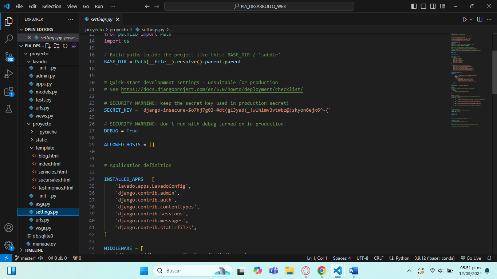
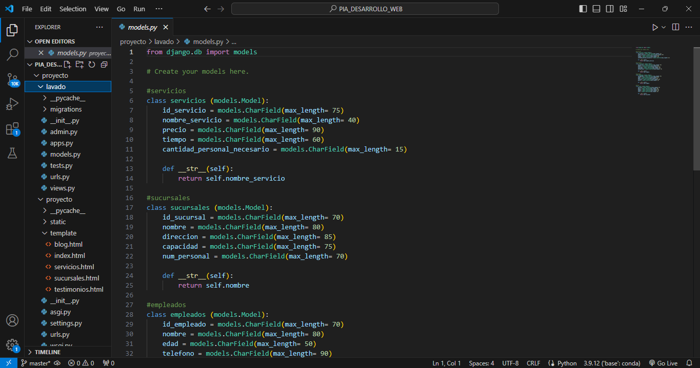
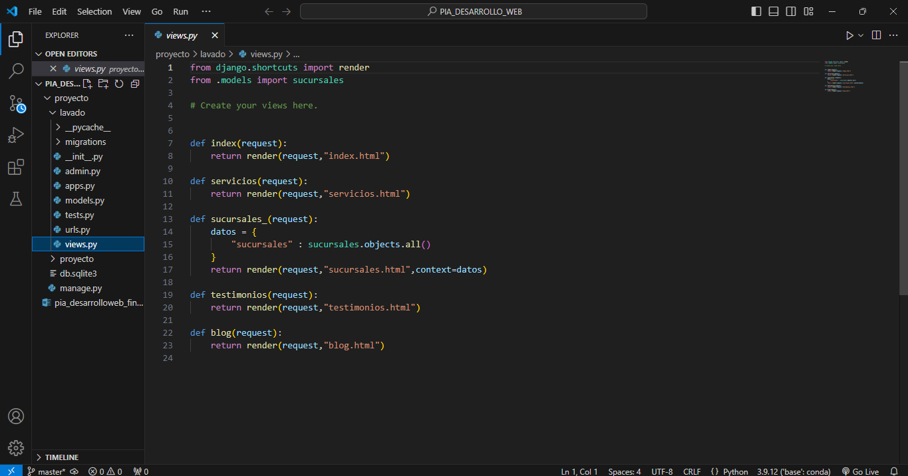

4. Configurar Url's
Tendremos que buscar el archivo con el nombre de url's.py para definir las rutas para las vistas del CRUD

° Instalar Django
Django se puede instalar desde la terminal de Visual Studio Code o desde Git Bash, pero en las 2 aplicaciones se instala de la misma manera, usando pip install Django
° Crear Proyecto
Para crear un proyecto se tendra que ingresar el siguiente comando: django-admin startproject myproject
°Crear una app dentro del proyecto
Para crear una app dentro del proyecto se tendra que ingresar el siguiente comando: python manage.py startapp myapp
°Agregar la app en el archivo settings.py del proyecto
Para esto hay que ingresar al Visual Studio Code y tendremos que buscar el archivo settings.py dentro de la carpeta proyecto y tendremos que agregar nuestra app, una vez dentro del archivo buscaremos la linea de codigo que diga INSTALLED_APPS y dentro de las llaves pondremos el nombre que le asignemos a nuestra app
En esta parte se tendra que definir un modelo, esto se hace en el archivo de models.py, este archivo se encuentra dentro de la carpeta de la app
Despues tendremos que ejecutar los siguintes comandos para crear las tablas en la base de datos: primero se ejecutara el comando python manage.py makemigrations, una vez ejecutado este comando ahora ejecutaremos el siguiente comando python manage.py migrate
En esta parte tendremos que buscar el archivo Views.py, aqui definiremos las funciones para poder manejar las operaciones CRUD
Tendremos que buscar el archivo con el nombre de url's.py para definir las rutas para las vistas del CRUD
Aqui lo que haremos sera crear las plantillas HTML para cada vista

Usuario (Interacción):
El usuario interactúa con la aplicación a través de formularios o botones.
Cada acción del CRUD tiene una vista específica (crear, leer, actualizar, eliminar). Las vistas reciben la solicitud del usuario y ejecutan la lógica correspondiente.
El modelo interactúa con la base de datos, donde se encuentran las entidades o registros. Las vistas usan el modelo para obtener (leer) o modificar (crear, actualizar, eliminar) datos.
Finalmente, las acciones de las vistas actualizan o consultan la base de datos.
Crear: El usuario completa un formulario → La vista guarda los datos a través del modelo → El modelo escribe en la base de datos.
Leer: El usuario solicita ver los datos → La vista consulta el modelo → El modelo recupera datos de la base de datos → Los datos se muestran al usuario.
Actualizar: El usuario edita un formulario → La vista actualiza los datos a través del modelo → El modelo actualiza el registro en la base de datos.
Eliminar: El usuario elige borrar un registro → La vista borra los datos a través del modelo → El modelo elimina el registro de la base de datos.